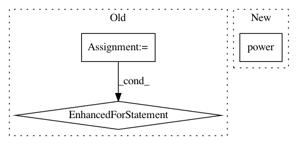

e44bb209a41d9f85a0f115b21b3b150bff65ee66,test/aqua/test_amplitude_estimation.py,TestBernoulli,test_qae_circuit,#TestBernoulli#Any#,192
Before Change
else:
q_factory = QFactory(qae.a_factory, i_objective=0)
for power in range(m):
for _ in range(2**power):
q_factory.build_controlled(circuit, q_objective, q_ancilla[power])
// fourier transform
iqft = QFT(m, do_swaps=False).inverse()
circuit.append(iqft.to_instruction(), q_ancilla)
expected_unitary = self._unitary.execute(circuit).get_unitary()
After Change
state_preparation.ry(angle, 0)
grover_op = GroverOperator(oracle, state_preparation)
for power in range(m):
circuit.compose(grover_op.power(2 ** power).control(),
qubits=[qr_eval[power], qr_objective[0]],
inplace=True)
In pattern: SUPERPATTERN
Frequency: 3
Non-data size: 3
Instances
Project Name: Qiskit/qiskit-aqua
Commit Name: e44bb209a41d9f85a0f115b21b3b150bff65ee66
Time: 2020-09-15
Author: jules.gacon@googlemail.com
File Name: test/aqua/test_amplitude_estimation.py
Class Name: TestBernoulli
Method Name: test_qae_circuit
Project Name: calico/basenji
Commit Name: 773d9932c4b891800bf254d5cea61159056437f1
Time: 2016-12-26
Author: drk@calicolabs.com
File Name: basenji/rnn.py
Class Name: RNN
Method Name: build
Project Name: hpclab/rankeval
Commit Name: 8d4fee5d7dc69f82aadb38abc4564dda5cc8580f
Time: 2017-06-14
Author: cristina.i.muntean@gmail.com
File Name: rankeval/core/metrics/rbp.py
Class Name: RBP
Method Name: eval_per_query